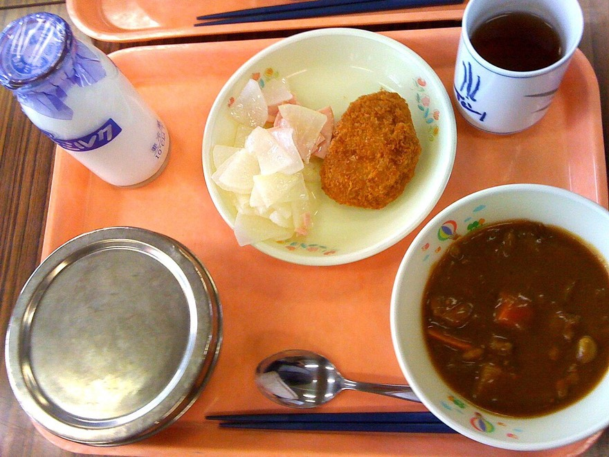
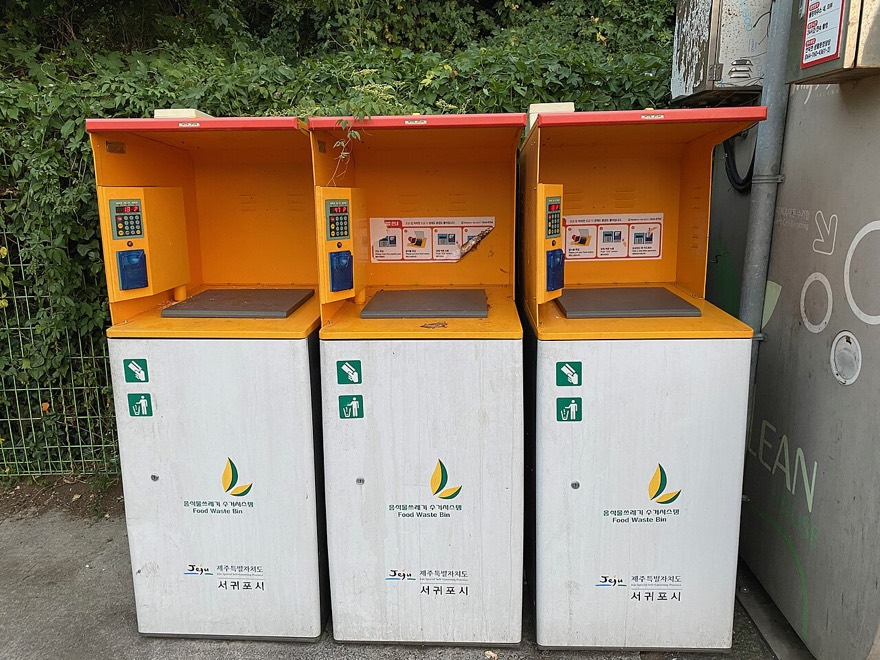

“많이 주세요!” 점심시간이 되면 식판에 음식을 가득 담아요. 친구들과 이야기하며 맛있게 먹고 나면, 식판에는 다 먹지 못한 음식이 남아 있어요.
이 남은 음식은 어디로 갈까요? 그리고 어떤 일을 일으킬까요?
42차시 · 14주차 · Ⅳ 정보과학 프로젝트 전체 보기
코드 아래 💡 코드 설명을 펼쳐 보고, 빈칸이 있으면 채운 뒤 실행해 보세요.
교과서 · Ⅳ 1-2 프로젝트 ① 급식 잔반 최소화
점심시간마다 버려지는 음식을 줄일 수 있을까요? 데이터를 모으고, 잔반이 가장 적게 나오는 메뉴 조합을 찾아 주는 프로그램을 만들어요.
급식 잔반을 줄이는 프로그램을 설계하려면 무엇을 고려해야 할까?
“많이 주세요!” 점심시간이 되면 식판에 음식을 가득 담아요. 친구들과 이야기하며 맛있게 먹고 나면, 식판에는 다 먹지 못한 음식이 남아 있어요.
이 남은 음식은 어디로 갈까요? 그리고 어떤 일을 일으킬까요?


| 한눈에 보기 | 내용 |
|---|---|
| 문제 정의 | 학교 급식 잔반량을 조사하고 줄일 방안을 찾는다 |
| 데이터 구조 | 딕셔너리 — 메뉴 이름을 키(key), 잔반량을 값(value)으로 |
| 알고리즘 | 동적 계획법 — 카테고리별 선택을 부분 문제로 나누고 중복 계산을 피함 |
| 이어지는 단원 | Ⅲ-3-2 동적 계획법 · UN 지속가능발전목표 12. 책임 있는 소비와 생산 |
① 문제 발견. 음식물 쓰레기는 환경·경제·사회 모든 면에서 문제를 일으켜요.
쓰레기를 처리할 때 나오는 메탄가스는 이산화탄소보다 25배나 강한 온실가스예요.
음식물 쓰레기를 처리하는 데 매우 많은 비용이 들어요.
한쪽에서는 식량이 버려지는데, 다른 한편에서는 많은 사람이 굶주리고 있어요.
출처: 환경부, 한국환경공단 (교과서 수록 자료)
② 데이터 수집. ‘급식 잔반’에 관한 데이터를 여러 방법으로 모아요.
③ 분석과 해결 방안 구조화. 모은 데이터로 하루 평균 잔반량과 환경에 미치는 영향을 계산해 봐요. 그리고 음식물 쓰레기를 줄이는 길을 두 갈래로 정리해요.
코드를 고쳐서 ▶ 실행하면 출력이 맞는지 바로 알려 줘요. 막히면 힌트부터 열어 보세요.
교과서 데이터(한 사람 한 끼 약 173g, 잔반 1kg당 온실가스 1.65kg, 1톤 처리 비용 약 14만 원)로 우리 학교 하루 잔반량을 계산해요. g을 kg으로, kg을 톤으로 바꾸는 부분의 ___를 채우세요. 단위 바꾸기를 틀리면 답이 1000배 틀려져요!
students = 600 # 급식 먹는 학생 수 (우리 학교에 맞게 바꿔 보세요)
per_person_g = 173 # 한 사람 한 끼 잔반(g)
total_kg = students * per_person_g / ___ # g → kg
co2_kg = total_kg * 1.65 # 잔반 1kg → CO2 1.65kg
cost = total_kg / ___ * 140000 # kg → 톤, 1톤에 14만 원
print(f"하루 잔반: {total_kg:.1f}kg")
print(f"온실가스: {co2_kg:.1f}kg")
print(f"처리 비용: {cost:,.0f}원")
print(f"1년(190일) 잔반: {total_kg * 190 / 1000:.1f}톤")
1kg = 1000g, 1톤 = 1000kg 이에요.
students = 600 # 급식 먹는 학생 수 (우리 학교에 맞게 바꿔 보세요)
per_person_g = 173 # 한 사람 한 끼 잔반(g)
total_kg = students * per_person_g / 1000 # g → kg
co2_kg = total_kg * 1.65 # 잔반 1kg → CO2 1.65kg
cost = total_kg / 1000 * 140000 # kg → 톤, 1톤에 14만 원
print(f"하루 잔반: {total_kg:.1f}kg")
print(f"온실가스: {co2_kg:.1f}kg")
print(f"처리 비용: {cost:,.0f}원")
print(f"1년(190일) 잔반: {total_kg * 190 / 1000:.1f}톤")
영양 선생님께 받은 일주일 잔반량(kg)을 딕셔너리에 담았어요. 평균과 잔반이 가장 많은 요일을 찾아 출력하세요. max()를 쓰지 말고, for 문으로 하나씩 비교하며 찾아보세요. 가장 많은 날의 메뉴를 살펴보면 원인을 짐작할 수 있어요.
waste = {'월': 98.5, '화': 112.0, '수': 87.5, '목': 131.0, '금': 95.0}
total = 0
worst_day = ''
worst = 0
for day, kg in waste.items():
# 합계를 더하고, 지금까지보다 많으면 worst_day와 worst를 바꾸세요
pass
print(f"평균 잔반: {total / len(waste):.1f}kg")
print(f"가장 많은 요일: {worst_day} ({worst}kg)")
total += kg 로 더하고, if kg > worst: 일 때 worst = kg, worst_day = day 로 기록해요.
waste = {'월': 98.5, '화': 112.0, '수': 87.5, '목': 131.0, '금': 95.0}
total = 0
worst_day = ''
worst = 0
for day, kg in waste.items():
total += kg
if kg > worst:
worst = kg
worst_day = day
print(f"평균 잔반: {total / len(waste):.1f}kg")
print(f"가장 많은 요일: {worst_day} ({worst}kg)")
위 계산 결과를 바탕으로 ① 문제를 초기 상태·목표 상태로 정의하고 ② 영양 선생님 면담 질문 3개를 준비하고 ③ 해결 방안을 조리량 조정과 인식 개선 두 갈래로 하나씩 적어 보세요. 학생·영양 선생님·조리 종사원 중 누구의 의견이 필요한지도 적어요.
해설 — 음식물 쓰레기가 썩으면 메탄이 나오고, 메탄은 이산화탄소보다 열을 훨씬 강하게 가둬요.
해설 — 원하는 결론에 맞는 데이터만 고르면 문제를 잘못 이해하게 돼요. 다양한 데이터를 충분히 모아야 해요.
우리 학교 잔반 문제를 풀 때 가장 먼저 모아야 할 데이터는 무엇이고, 왜 그런지 한 줄로 적어 보세요.